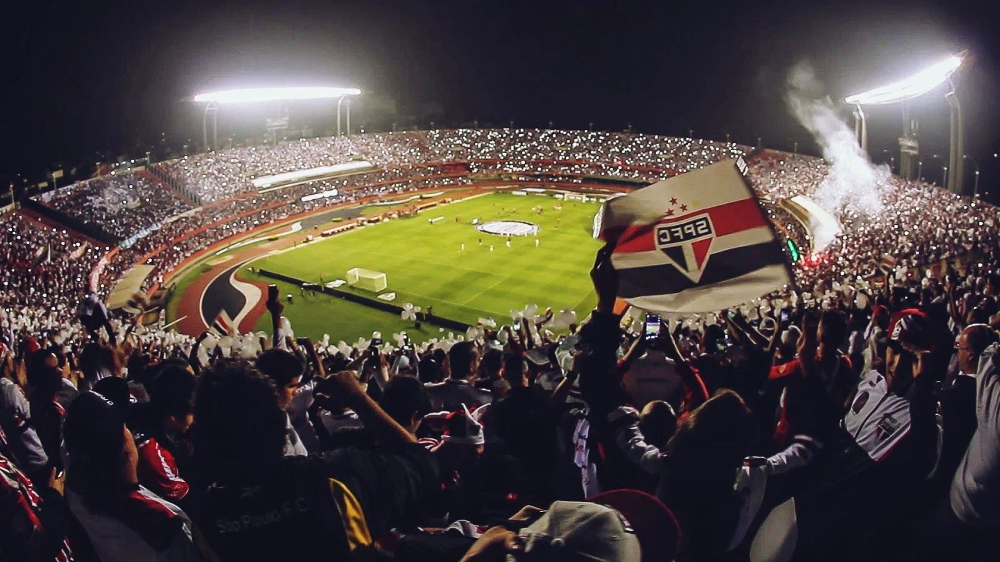

The Story of São Paulo Futebol Clube
Founded on January 25, 1930, São Paulo Futebol Clube (SPFC) is one of the most successful and storied football clubs in Brazil and South America. The club's history is marked by its resilience, triumphs, and contributions to the beautiful game.
Years and Formation
São Paulo FC was born from a merger of two previous clubs: Clube Atlético Paulistano and Associação Atlética das Palmeiras. The aim was to create a formidable team that could compete at the highest levels of Brazilian football. Despite facing financial difficulties in its early years, São Paulo FC persevered and gradually established itself as a competitive team in the regional leagues.
Rise to Prominence
The 1940s and 1950s were transformative decades for São Paulo FC. Under the leadership of influential figures like Paulo Machado de Carvalho and the legendary coach Vicente Feola, the club began to dominate the Campeonato Paulista (São Paulo State Championship). The construction of Estádio do Morumbi, which began in the 1950s and was completed in 1960, provided the club with a world-class venue and became a symbol of its ambitions.
Golden Era
The 1980s and 1990s are considered the golden era of São Paulo FC. Under the management of Telê Santana, the club achieved unprecedented success. São Paulo won the Campeonato Brasileiro Série A (Brazilian Championship) in 1986 and 1991, and they conquered the Copa Libertadores and the club world Cup in both 1992 and 1993, solidifying their reputation on the global stage.
Continued Success and Modern Era
The 2000s brought continued success. São Paulo FC won the Campeonato Brasileiro Série A three consecutive times from 2006 to 2008, showcasing their dominance in Brazilian football. The club also added another Copa Libertadores title in 2005, followed by another club world Cup victory the same year. Becoming the only Brazilian team to won the club world cup three times.and after winning the Brazilian Cup in 2023 and the King's Super Cup in 2024, São Paulo Football Club became the only team in Brazil to win every title possible, earning it the nickname “champion of everything”.
São Paulo FC is known for its strong youth academy, which has produced numerous talented players who have gone on to have illustrious careers both in Brazil and internationally. Legends like Raí, Kaká, and Cafu started their careers at the club, embodying the club's commitment to nurturing talent.
Legacy and Impact
São Paulo Futebol Clube's legacy extends beyond its trophy cabinet. The club has been a cornerstone of Brazilian football, contributing to the national team's success and elevating the sport's popularity. The iconic red, white, and black colors of São Paulo FC, along with the star-studded emblem, are recognized worldwide.
Today, São Paulo FC continues to compete at the highest levels, with its passionate fanbase supporting the team through every challenge. The club's history is a testament to its resilience, excellence, and unwavering dedication to the sport, making São Paulo Futebol Clube a true giant of football.